Caregivers of children with disabilities
Please note that lines by date and days sheltering in place are smoothed curves – they may be poor representations of the data in locations with few participants. For example, the largest number of days sheltering in place only applies to a small portion of participants; lines representing small demographic groups at these large should not be interpreted.
Well-being during shelter-in-place
Compared to general population
Caregiver anxiety

Caregiver depression

Caregiver stress

Caregiver loneliness
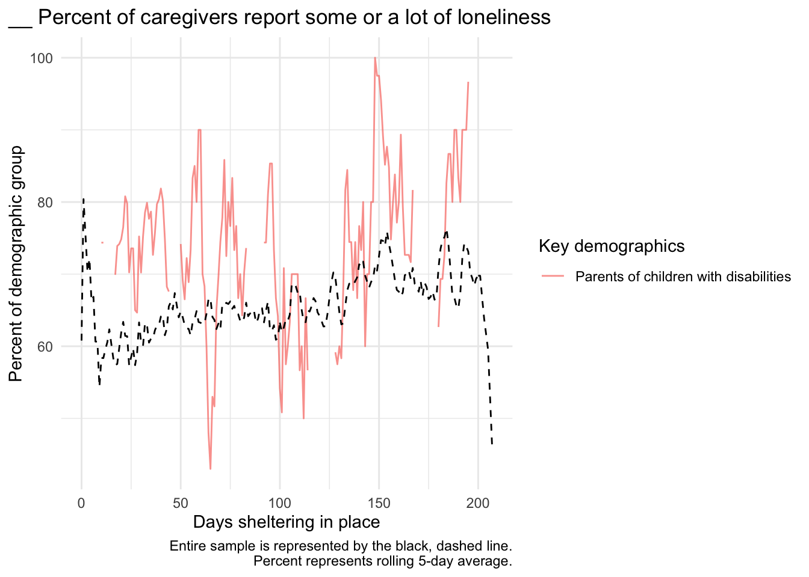
Child externalizing

Child internalizing

By poverty level
Of the 867 caregivers of children with a disability, 318 report an income below the poverty threshold for their household size and 342 report an income above the threshold.
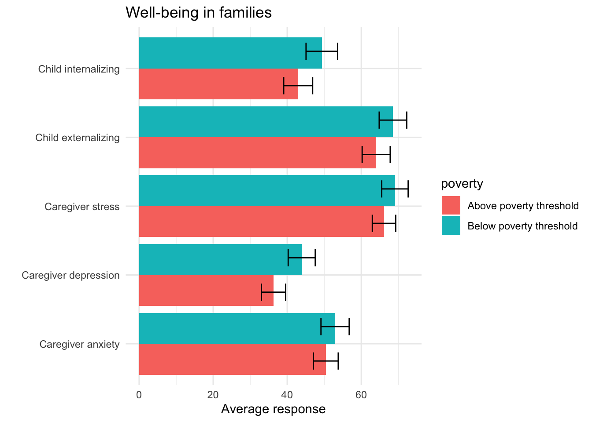
By geographic region
Caregiver anxiety
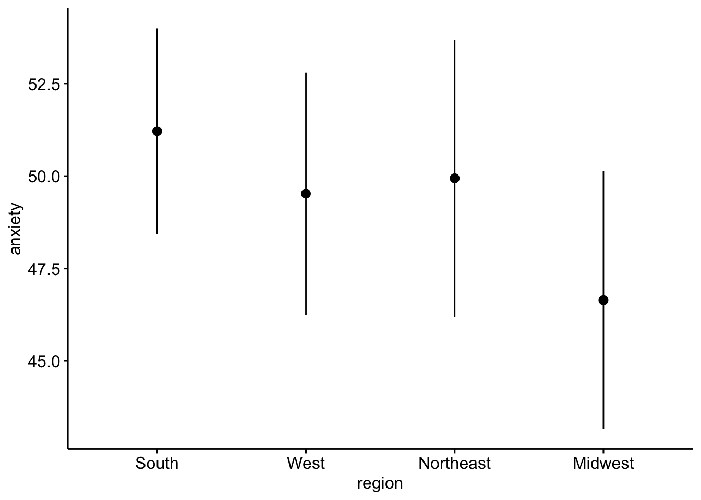

Caregiver depression
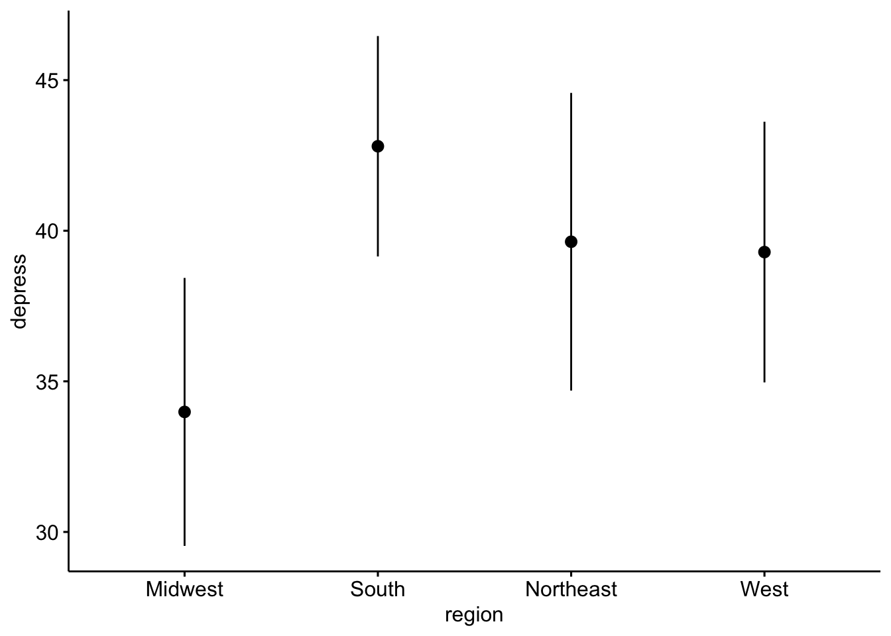

Caregiver stress
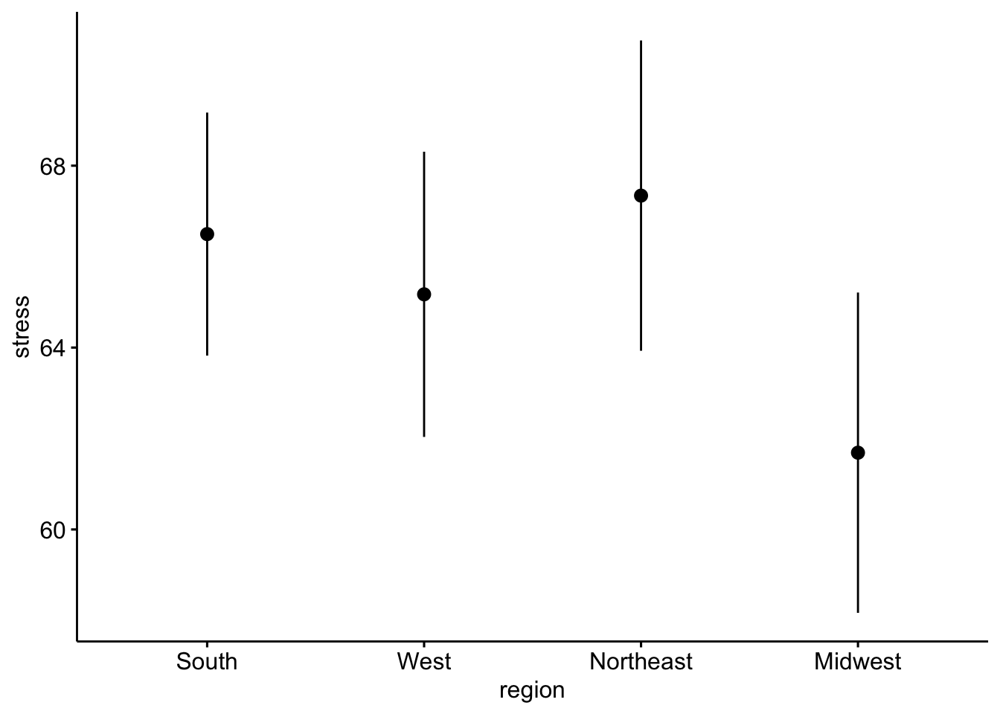

Child externalizing
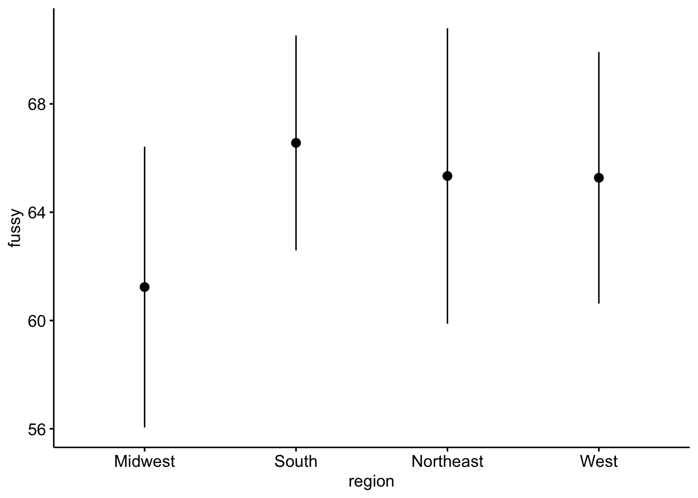

Child internalizing
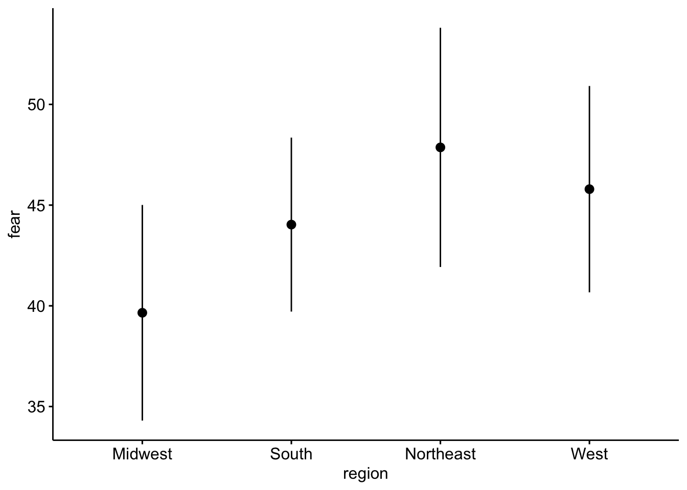

By childcare
Of these caregivers, 42 have non-family childcare and 825 do not.
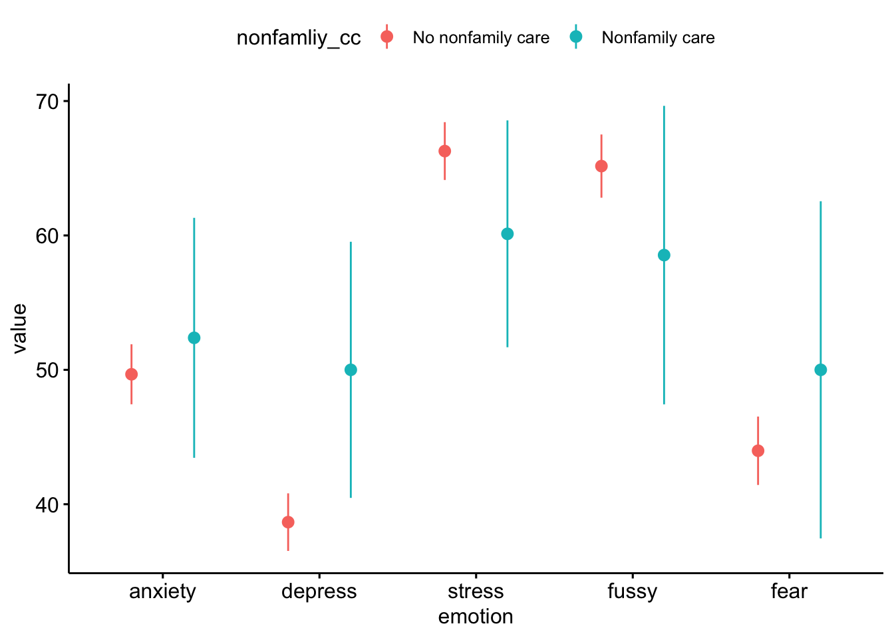
Of these caregivers, 133 have family childcare and 734 do not.
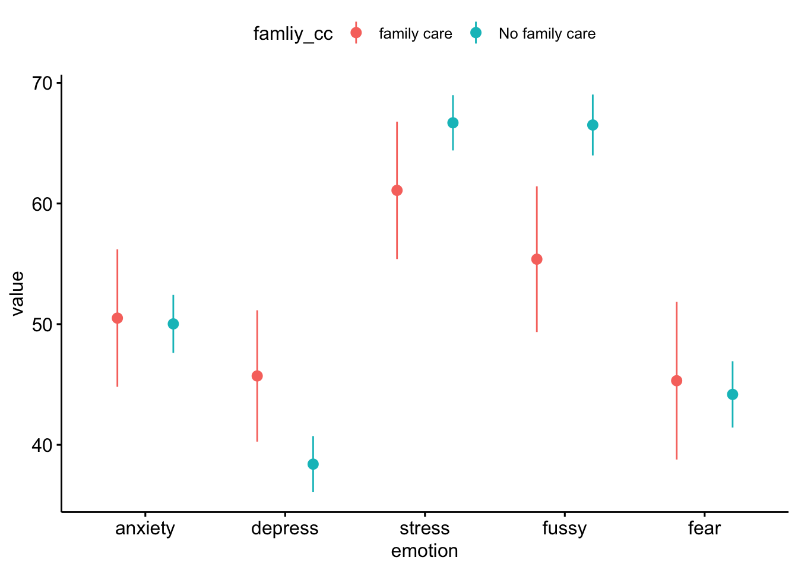
By use of online resources
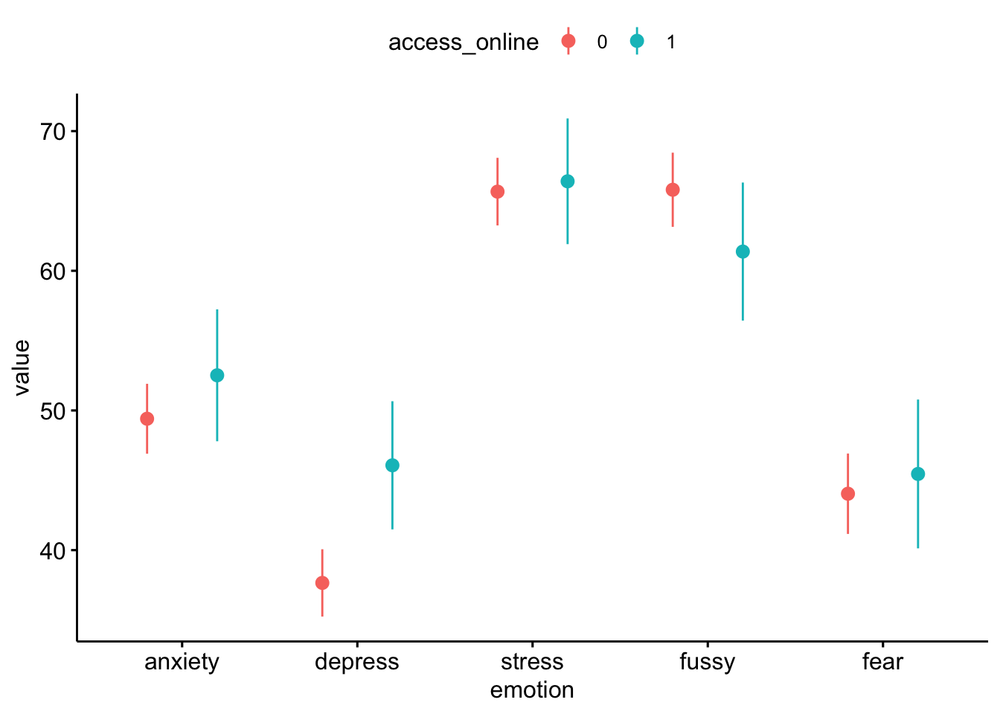
Education
Compared to general population
Parent education interrupted

Child education interrupted

By poverty level
Of the 867 caregivers of children with a disability, 318 report an income below the poverty threshold for their household size and 342 report an income above the threshold.
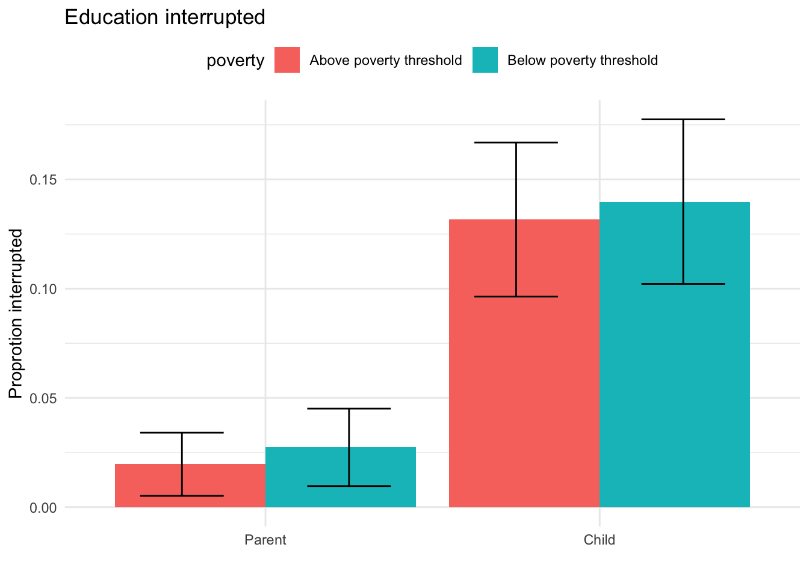
By geographic region
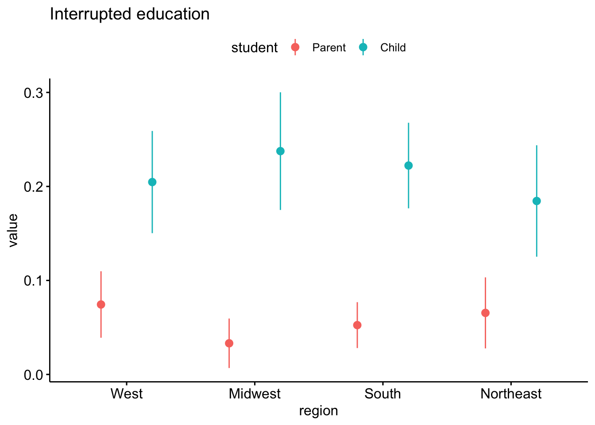
By childcare
Of these caregivers, 42 have non-family childcare and 825 do not.
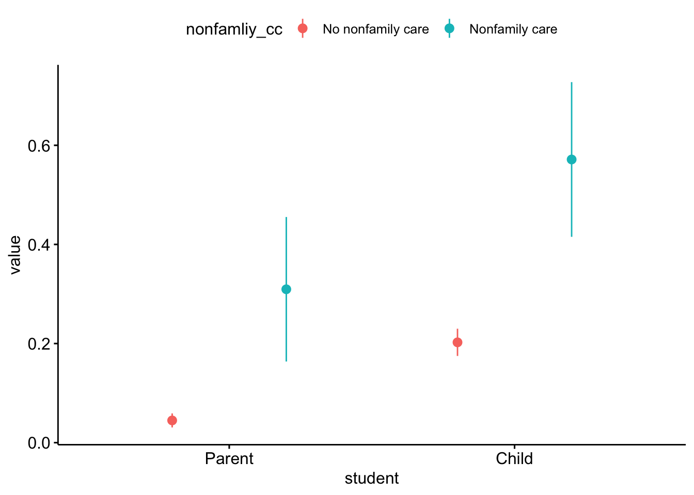
Of these caregivers, 133 have family childcare and 734 do not.
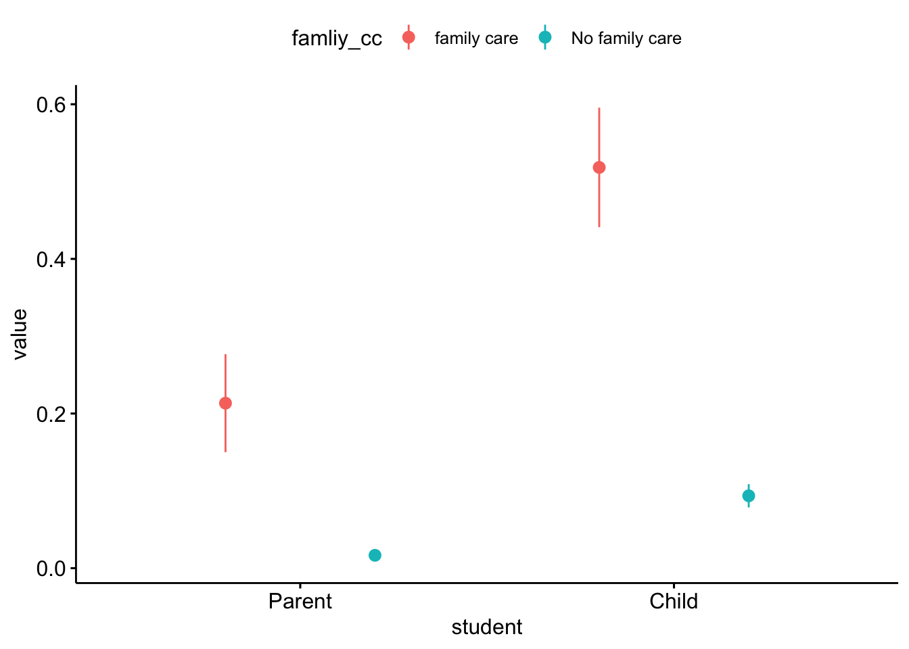
By use of online resources

Loss
Income
##
## Pearson's Chi-squared test with Yates' continuity correction
##
## data: week1$disability and week1$income_decreaed
## X-squared = 1.8157, df = 1, p-value = 0.1778## # A tibble: 2 x 4
## disability n decreased_income percent
## <dbl> <int> <dbl> <dbl>
## 1 0 6457 2872 0.445
## 2 1 766 360 0.470Non-family childcare
##
## Pearson's Chi-squared test with Yates' continuity correction
##
## data: week1$disability and week1$decrease_nonfamilyCC
## X-squared = 0.2622, df = 1, p-value = 0.6086## # A tibble: 2 x 4
## disability n decrease_nonfamilyCC percent
## <dbl> <int> <dbl> <dbl>
## 1 0 6457 805 0.125
## 2 1 766 90 0.117Testing predictors of well-being in this demo
| Outcome | Coefficient Estimate | Std. Error | p-value | Corrected p-value |
|---|---|---|---|---|
| Lost income since pandemic (N = 368) | ||||
| Caregiver anxiety | 5.24 | 2.29 | 0.023 | 1.000 |
| Careviver depression | 3.15 | 2.20 | 0.154 | 1.000 |
| Caregver stress | 8.69 | 2.17 | 0.000 | 0.006 |
| Child externalzing | 4.20 | 2.41 | 0.083 | 1.000 |
| Child internalizing | -1.50 | 2.63 | 0.570 | 1.000 |
| Lost employment since pandemic (N = 300) | ||||
| Caregiver anxiety | 4.43 | 2.54 | 0.082 | 1.000 |
| Careviver depression | 9.70 | 2.40 | 0.000 | 0.005 |
| Caregver stress | 5.90 | 2.45 | 0.017 | 1.000 |
| Child externalzing | -2.20 | 2.70 | 0.416 | 1.000 |
| Child internalizing | -1.18 | 2.95 | 0.689 | 1.000 |
| Have difficulty paying for basics (N = 233) | ||||
| Caregiver anxiety | 14.27 | 2.49 | 0.000 | 0.000 |
| Careviver depression | 14.71 | 2.39 | 0.000 | 0.000 |
| Caregver stress | 14.05 | 2.37 | 0.000 | 0.000 |
| Child externalzing | 0.99 | 2.68 | 0.711 | 1.000 |
| Child internalizing | 9.91 | 2.92 | 0.001 | 0.054 |
| Two or more children in household (N = 575) | ||||
| Caregiver anxiety | 0.69 | 2.63 | 0.793 | 1.000 |
| Careviver depression | 0.07 | 2.56 | 0.979 | 1.000 |
| Caregver stress | 6.73 | 2.52 | 0.008 | 0.501 |
| Child externalzing | 2.12 | 2.79 | 0.449 | 1.000 |
| Child internalizing | 5.84 | 3.03 | 0.055 | 1.000 |
| Three or more children in household (N = 321) | ||||
| Caregiver anxiety | 1.48 | 2.38 | 0.534 | 1.000 |
| Careviver depression | 4.04 | 2.31 | 0.081 | 1.000 |
| Caregver stress | 5.33 | 2.28 | 0.020 | 1.000 |
| Child externalzing | 0.69 | 2.52 | 0.785 | 1.000 |
| Child internalizing | 5.31 | 2.73 | 0.053 | 1.000 |
| Can access online serivices (N = 168) | ||||
| Caregiver anxiety | 4.15 | 2.56 | 0.106 | 1.000 |
| Careviver depression | 6.72 | 2.32 | 0.004 | 0.263 |
| Caregver stress | 1.45 | 2.32 | 0.531 | 1.000 |
| Child externalzing | -2.79 | 2.61 | 0.285 | 1.000 |
| Child internalizing | 1.05 | 2.82 | 0.710 | 1.000 |
| Can access telehealth serivices (N = 165) | ||||
| Caregiver anxiety | 7.46 | 3.60 | 0.039 | 1.000 |
| Careviver depression | 5.01 | 3.29 | 0.129 | 1.000 |
| Caregver stress | 1.12 | 3.27 | 0.733 | 1.000 |
| Child externalzing | 3.97 | 3.64 | 0.277 | 1.000 |
| Child internalizing | 0.18 | 3.97 | 0.963 | 1.000 |
| Below the poverty threshold (N = 318) | ||||
| Caregiver anxiety | 2.50 | 2.57 | 0.332 | 1.000 |
| Careviver depression | 7.61 | 2.48 | 0.002 | 0.154 |
| Caregver stress | 2.95 | 2.42 | 0.224 | 1.000 |
| Child externalzing | 4.54 | 2.71 | 0.095 | 1.000 |
| Child internalizing | 6.40 | 2.94 | 0.030 | 1.000 |
| Child education interrupted (N = 138) | ||||
| Caregiver anxiety | -0.39 | 2.79 | 0.888 | 1.000 |
| Careviver depression | 1.98 | 2.61 | 0.448 | 1.000 |
| Caregver stress | -1.98 | 2.58 | 0.445 | 1.000 |
| Child externalzing | 3.42 | 2.89 | 0.238 | 1.000 |
| Child internalizing | -0.65 | 3.15 | 0.836 | 1.000 |
| Parent education interrupted (N = 35) | ||||
| Caregiver anxiety | -1.69 | 4.37 | 0.700 | 1.000 |
| Careviver depression | 4.92 | 3.87 | 0.205 | 1.000 |
| Caregver stress | -2.48 | 3.85 | 0.520 | 1.000 |
| Child externalzing | -7.93 | 4.38 | 0.071 | 1.000 |
| Child internalizing | -3.39 | 4.73 | 0.474 | 1.000 |
| Have delayed healthcare (N = 628) | ||||
| Caregiver anxiety | 10.52 | 2.73 | 0.000 | 0.010 |
| Careviver depression | 8.62 | 2.58 | 0.001 | 0.063 |
| Caregver stress | 12.16 | 2.54 | 0.000 | 0.000 |
| Child externalzing | 5.35 | 2.85 | 0.061 | 1.000 |
| Child internalizing | 7.05 | 3.08 | 0.023 | 1.000 |
| African American (N = 73) | ||||
| Caregiver anxiety | -0.02 | 4.06 | 0.995 | 1.000 |
| Careviver depression | 0.85 | 3.93 | 0.828 | 1.000 |
| Caregver stress | -0.39 | 3.89 | 0.921 | 1.000 |
| Child externalzing | -10.70 | 4.27 | 0.013 | 0.784 |
| Child internalizing | -11.21 | 4.70 | 0.018 | 1.000 |
| Latinx (N = 162) | ||||
| Caregiver anxiety | -0.22 | 2.90 | 0.939 | 1.000 |
| Careviver depression | 3.17 | 2.81 | 0.261 | 1.000 |
| Caregver stress | -1.42 | 2.77 | 0.610 | 1.000 |
| Child externalzing | -5.49 | 3.06 | 0.074 | 1.000 |
| Child internalizing | 3.44 | 3.34 | 0.304 | 1.000 |
| Single (N = 156) | ||||
| Caregiver anxiety | 7.08 | 2.92 | 0.016 | 0.964 |
| Careviver depression | 9.36 | 2.83 | 0.001 | 0.070 |
| Caregver stress | 9.34 | 2.79 | 0.001 | 0.063 |
| Child externalzing | 4.41 | 3.10 | 0.156 | 1.000 |
| Child internalizing | 3.58 | 3.37 | 0.289 | 1.000 |
| Essential employees (N = 95) | ||||
| Caregiver anxiety | -0.51 | 4.08 | 0.901 | 1.000 |
| Careviver depression | 0.58 | 3.99 | 0.884 | 1.000 |
| Caregver stress | -0.89 | 3.90 | 0.818 | 1.000 |
| Child externalzing | 0.54 | 4.30 | 0.900 | 1.000 |
| Child internalizing | -3.96 | 4.72 | 0.403 | 1.000 |
| Note: | ||||
| Coefficients estimated using a multi-level model in which responses are nested within caregivers. In the case of binary predictors, we report the number (N) of participants who fall into the category listed. p-values are adjusted using a Holm correction | ||||
Trends by income
Caregiver anxiety
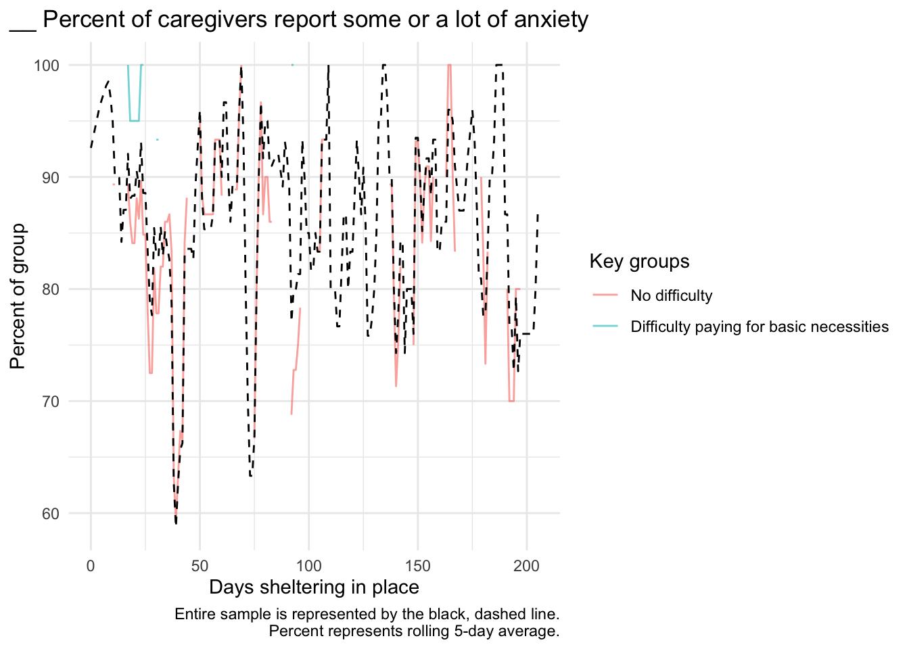
Caregiver depression
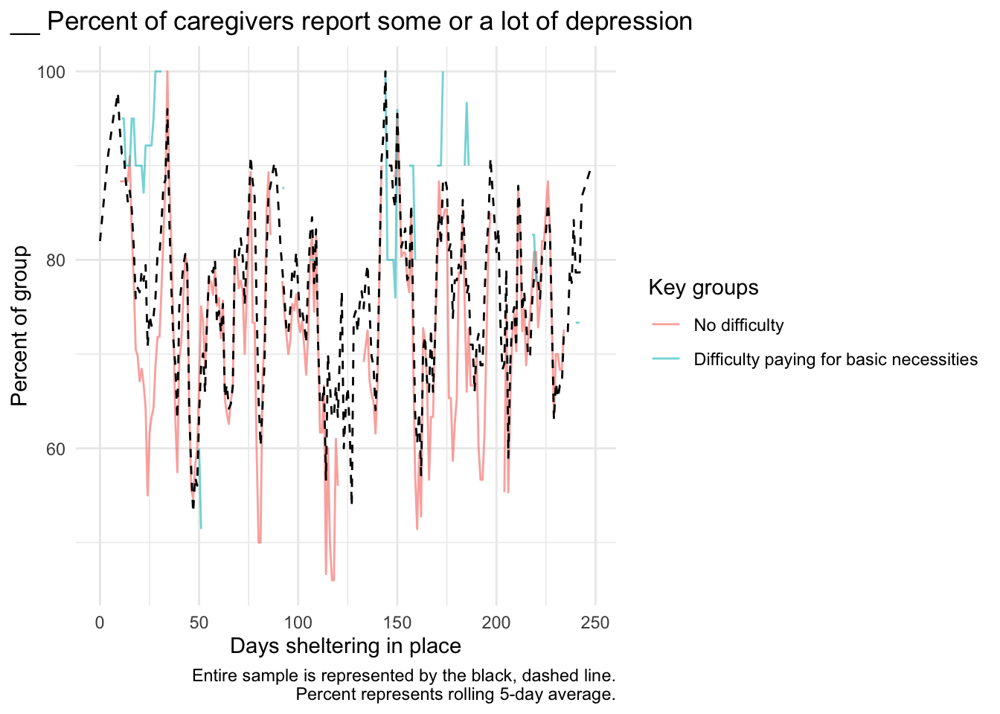
Caregiver stress
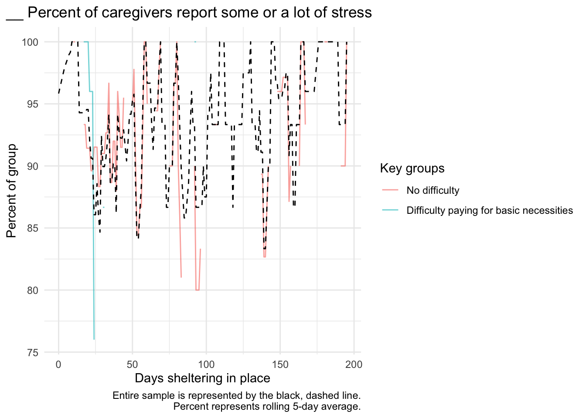
Child externalizing
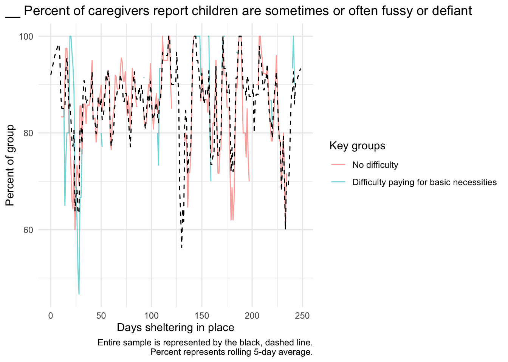
Child internalizing
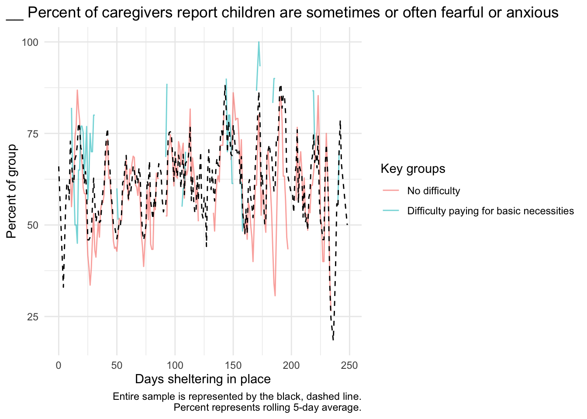